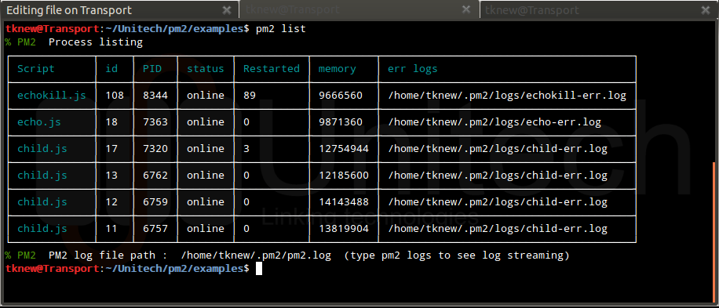
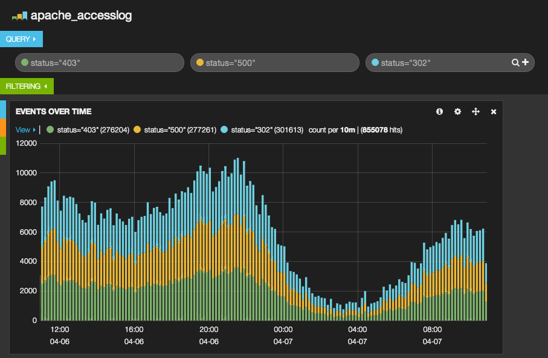
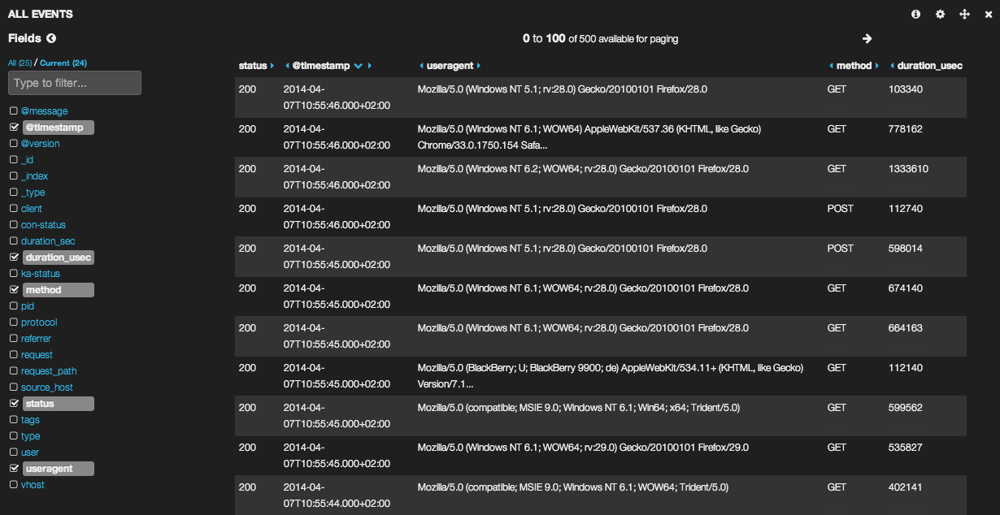

Automating development tasks using Grunt
Topics I'll talk about today:
- What is Grunt
- How do we use it
- How do we optimize it
What's Grunt
Grunt
- Task runner (e.g: ant, rake, cake, gulp, .sh..)
- Built on top of Node.JS
- Easy to configure, non-restrictive, easy to use
- automation, automation, automation
Facts about Grunt:
- 7700 Stars on github
- 900 forks
- 44 contributors
Almost the same amount of stars than Textmate/Symphony
And who's using it?
- jQuery
- Adobe
- Saucelabs
- Modernizr
How it actually looks like..

But what can we do with it ?
EVERYTHING. Even pankackes.
- Linting documents (jshint, AriaLinter, csslint)
- Optimizing images
- Optimizing documents (concatenating js/css, minifying..)
- TESTS, TESTS, TESTS
- Automatically reload/rebuild on file change (watchers)
- Precompiling templates, less, sass, ocss, etc
- And much much more..
How do we actually use it?

Instalation is quite forward
# Install nodejs and npm
tar -zxf node-v0.6.18.tar.gz
cd node-v0.6.18
./configure && make && sudo make install
# Install grunt
sudo npm install -g grunt-cli
Sample Gruntfile
module.exports = function(grunt) {
'use strict';
// Set grunt configuration object
grunt.initConfig({
pkg: grunt.file.readJSON('package.json'),
copy: {
main: {
expand: true,
cwd: PATH_ASSETS,
src: '**',
dest: PATH_DEPLOY_ASSETS
}
}
});
// Load npm tasks
grunt.loadNpmTasks('grunt-contrib-copy');
// Register current tasks
grunt.registerTask('default', 'build:dev');
grunt.registerTask('build:dev', ['copy']);
};
Capistrano, fabric, deploy.sh, et. al.
Additionlly triggers scripts that can:
- restart the web server
- create a database and it's scheme
- install/update your app's dependencies
Capistrano, fabric, deploy.sh, et. al.
Pro:
- Clean server side application structure (including logs, shared files, etc.)
- Trigger arbitrary scripts before/after the deployment
- Quickly rewind to previous deployment on error
Con:
- Introduces another language as additional dependency
(Capistrano: Ruby; Fabric: Python)
Run Node.js
(and keep it running)
Run Node.js (and keep it running)
Start the script as a daemon:
- Nodemon/node-forever (written in Node.js)
- supervise (UNIX daemontools)
- Upstart (Ubuntu)
Example Upstart script
start on runlevel [2345]
stop on runlevel [06]
respawn
respawn limit 5 60
NODE_SCRIPT = /var/www/myapp/server.js
LOGFILE = /var/log/myapp.log
exec start-stop-daemon --start --chuid node \
--exec /usr/local/bin/node -- \
$NODE_SCRIPT >> $LOGFILE 2>&1
More elaborate: PM2
Process manager with built-in load-balancer

PM2
Monitor processes

Whatever method you use to run your applications:
Startup scripts should …
- … be as general as possible (only path, environment, main JS file)
- … not contain configuration settings for your application
- … be included alongside your deployment (symlink if necessary)
- … be kept under version control as well
There are at least two occasions,
where your app will not be available:
- While deploying a new version
- On application errors/exceptions
Deployment
Downtime during deployment should be kept to a minimum:
- Only deploy tested code to production
- Automate the entire deployment process
- Use a cluster to reload workers
(complete app restart is only needed if the master changes)
recluster
wrapper around Node.js's own cluster module
// cluster.js
var recluster = require('recluster'),
path = require('path')
cluster = recluster(path.join(__dirname, 'server.js'));
process.on('SIGUSR2', function() {
console.log('Got SIGUSR2, reloading cluster ...');
cluster.reload();
});
cluster.run();
Reload cluster workers: kill -s SIGUSR2 <cluster_pid>
recluster
// server.js
server.on('close', function() {
// cleanup
});
Errors/Exceptions
Different categories of errors:
- Hardware/network errors:
You're screwed, can't do much about it. - Component errors:
Database not responding, files missing, wrong access privileges
Throw an exception, exit application (check your restart script!) - Programming errors:
Testing your code is great, but some bugs will eventually slip through.
Hardly assessable level of impact, try to fail gracefully - Usage errors:
Validate inputs, inform the user and offer guidance
Errors/Exceptions
- Bind error handling to individual parts of your application
- Those parts may differ in error handling: e.g. request errors, input parsing, external APIs/services
- Try to resolve errors with minimum impact to the overall application:
- Unable to connect? => Notify the user, log error, try again
- Invalid input? => Notify the user, stop processing
- Try to get focused stack traces: Easier for debugging
What happens in Vegas, stays in Vegas
Using Domains in Node.js
if (err) …in each callback is quite bulkytry/catchalso doesn't work well for asynchronous code- Encapsulate errors in domains
Using Domains in Node.js
var d = require('domain').create();
d.on('error', function(err) {
console.log('Uh, got this error:', err.message);
// Important: Clean up after you!
// ...
});
d.run(function() {
// Stuff that might break goes here
});
Node.js API stability: 2 - Unstable
Metrics
Metrics help you to see
- What are people really doing?
How do they use the application? - What errors do occur?
- Where are bottlenecks?
- Is someone messing with your app?
Metrics: Monitoring
What is going on?
- CPU load, memory usage, Node.js heap size
- HTTP requests, response times
- Database monitoring, CPU/memory profiling, alerts
Monitoring: look
Pro:
- Open Source
Con:
- Older fork of Nodetime (two years old)
Monitoring: Nodetime, New Relic, etc.
(Commercial Products)
Pro:
- Many different metrics
- Free tier
Con:
-
Free tiers are very limited:
Nodetime: Only one process(!) can be analyzed
New Relic: Only 24h data retention -
Can become quite expensive (smallest plans):
Nodetime: 99$/month, 5 processes sending data,
New Relic: 149$/month and host
Metrics: Logging
- Keep your logs in one place, either on application level or in
/var/log. - Use log levels: Separate debug information from warnings and errors
- Use a coherent log format (timestamp, level, message, payload)
- Separate your access logs (e.g. in Express) from your application logs
- Track your deployments with your analytics tools
Metrics: Logging
One possible solution: Bunyan
- All logs are stored in JSON format (timestamp, app, message, payload)
- Uses streams, offers different targets out of the box: File, rotating file, database, etc.
Metrics: Logging
But …
- Uncaught exceptions are still logged to
stderr - Other components may still use
console.logstatements
node app.js >> /var/log/myapp.log 2>&1
Again, multiple logs in different formats.
Analysis of gathered metrics
Different log formats and destinations make data analysis difficult:
# Apache access log
10.0.1.22 - - [15/Oct/2010:11:46:46 -0700] "GET /favicon.ico HTTP/1.1" 404 209
fe80::6233:4bff:fe29:3173 - - [15/Oct/2010:11:46:58 -0700] "GET / HTTP/1.1" 200 44
# Apache error log
[Fri Oct 15 11:46:46 2010] [error] [client 10.0.1.22] File does not exist: /Library/WebServer/Documents/favicon.ico
[Fri Oct 15 11:46:58 2010] [error] [client fe80::6233:4bff:fe29:3173] File does not exist: /Library/WebServer/Documents/favicon.ico
# typical Express.js log output
[Mon, 21 Nov 2011 20:52:11 GMT] 200 GET /foo (1ms)
Blah, some other unstructured output to from a console.log call.
»ELK« stack
- Elasticsearch (Storage/Search)
- Logstash (Logfile processor)
- Kibana (Logfile viewer)
»ELK« stack
Pro:
- Very powerful and extendable log analysis
- Easy querying and visualization
- Realtime search
- Open Source
Con:
- Slightly more complex setup (Java, JRuby, etc.)
- Thus might not fit for smaller projects/hosting solutions
Logstash
Turns messy data in different log formats …
# Apache access log
10.0.1.22 - - [15/Oct/2010:11:46:46 -0700] "GET /favicon.ico HTTP/1.1" 404 209
fe80::6233:4bff:fe29:3173 - - [15/Oct/2010:11:46:58 -0700] "GET / HTTP/1.1" 200 44
# Apache error log
[Fri Oct 15 11:46:46 2010] [error] [client 10.0.1.22] File does not exist: /Library/WebServer/Documents/favicon.ico
[Fri Oct 15 11:46:58 2010] [error] [client fe80::6233:4bff:fe29:3173] File does not exist: /Library/WebServer/Documents/favicon.ico
# typical Express.js log output
[Mon, 21 Nov 2011 20:52:11 GMT] 200 GET /foo (1ms)
Blah, some other unstructured output to from a console.log call.
Logstash
… into structured output
{
"message" => "127.0.0.1 - - [11/Dec/2013:00:01:45 -0800…
"@timestamp" => "2013-12-11T08:01:45.000Z",
"@version" => "1",
"host" => "cadenza",
"clientip" => "127.0.0.1",
"timestamp" => "11/Dec/2013:00:01:45 -0800",
"verb" => "GET",
"request" => "/xampp/status.php",
"httpversion" => "1.1",
"response" => "200",
"bytes" => "3891",
"referrer" => "\"http://cadenza/xampp/navi.php\"",
"agent" => "\"Mozilla/5.0 (Macintosh; Intel Mac OS X…
}
Logstash
- Easily extendable to custom log formats
- Read log information from file, Heroku, Redis, RabbitMQ, stdin, syslog, TCP, UDP, XMPP, ZeroMQ, …
- Output to file, Ganglia, Graphite, Irc, Loggly, MongoDB, Nagios, RabbitMQ, Redis, Riak, S3, Statsd, Syslog, TCP, UDP, Websocket, XMPP, ZeroMQ, …
Kibana

Kibana

That's all folks!
Ignacio Rivas
- @sabarasaba
- GitHub
- sabarasaba
- Web
- ignaciorivas.me